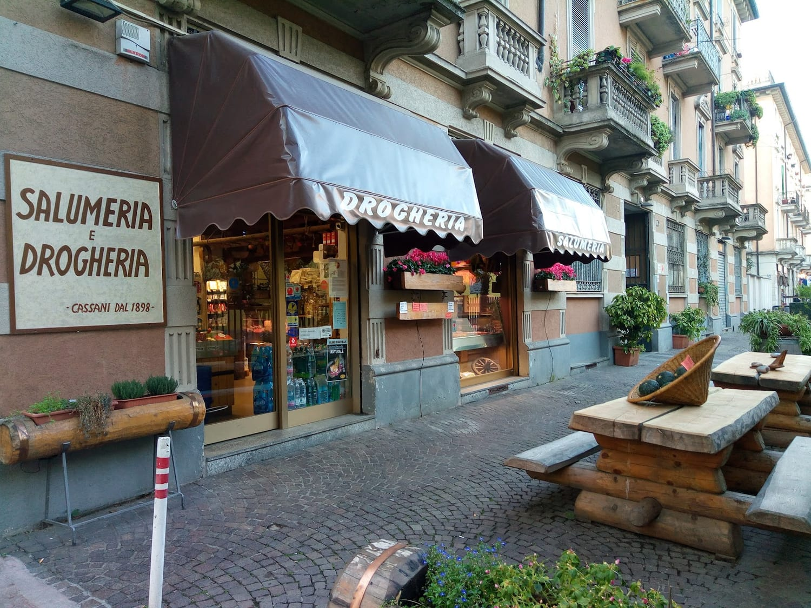
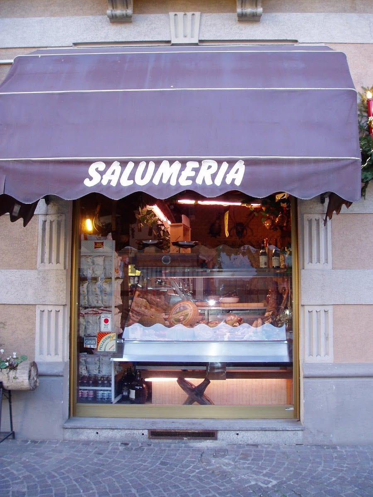
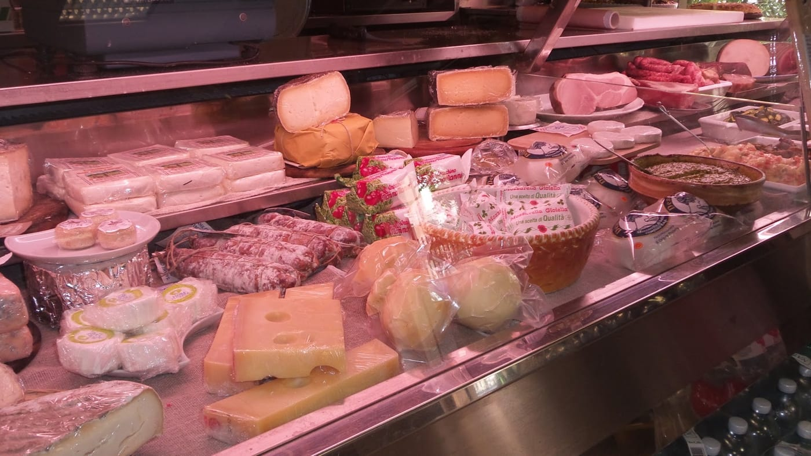
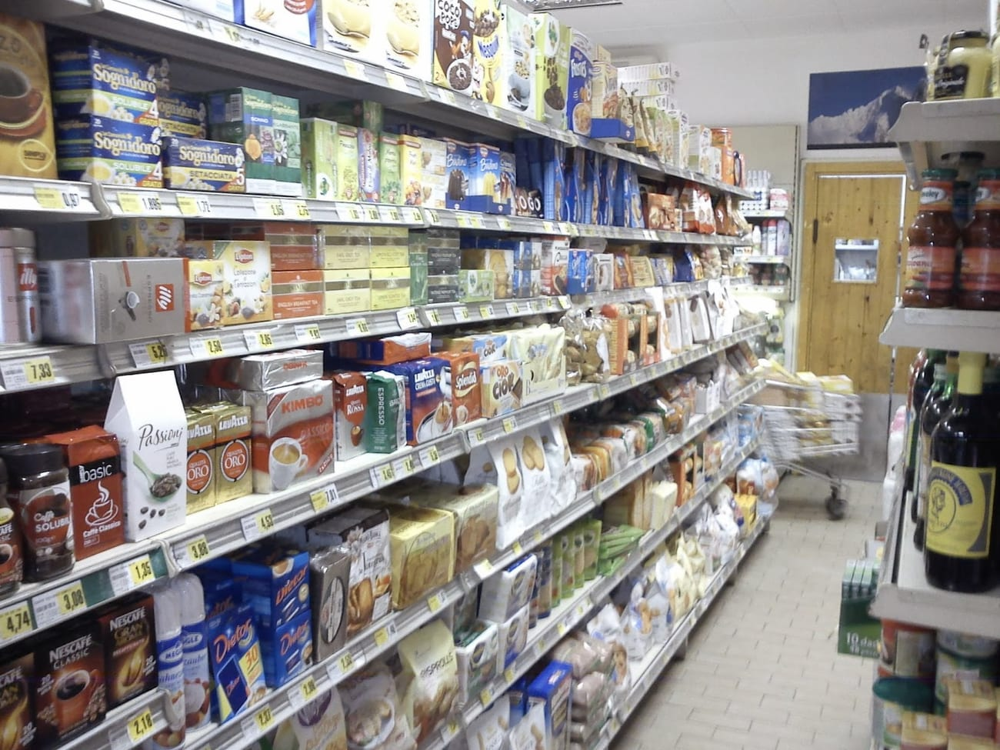

Dal 1898, la spesa come una volta.
Salumeria e drogheria di famiglia a Porta Romana. Da Ercole e Paolo — che vi accolgono, ancora, in milanese.

Più di un secolo in Via Orti
Tutto comincia nel 1898, con Leonilde: la nonna di Ercole apre la bottega a due passi da qui.
Nel 1981 la salumeria si sposta di pochi metri, nella sede di oggi. Da allora nulla è cambiato nello spirito: dietro il banco c'è ancora la famiglia — Ercole, con il figlio Paolo — pronta ad accogliere ogni cliente con una battuta in dialetto.
È una delle botteghe artigiane che hanno reso Via Orti un piccolo angolo di Milano che sa di mestiere e di tempo.

La patria dei mondeghini
Le polpette milanesi per eccellenza: nate come piatto povero, con quel che restava in cucina, e diventate un orgoglio della città. Da Cassani si fanno come si deve, ed è per questi che in tanti attraversano Milano.
«Mondeghitt», in milanese. Croccanti fuori, morbidi dentro: da mangiare in piedi, al banco, o da portare a casa.
Cosa trovi da Cassani
Salumeria e drogheria insieme: il meglio del banco e la spesa di ogni giorno.
Salumi e formaggi
Affettati e formaggi italiani, tagliati al momento. Prosciutto, mortadella, salami, e le specialità che ti propone il titolare.
La drogheria
Non solo salumeria: pasta, conserve, caffè, dispensa e prodotti di ogni giorno, con ottimi prezzi e qualità scelta.
Panini fatti al momento
Il panino con quello che vuoi dentro — roast-beef e carciofi, frittata, formaggio: farciti come piacciono a te.
L'aperitivo dalla affettatrice
Se arrivi prima delle 20 puoi prendere prodotti sani e gustosi e goderteli fuori, con un ottimo prosecco. In barba ai «migliori».
Qui si parla anche milanese
È scritto su una vecchia targa di legno, appesa sotto le travi. Da Cassani il dialetto non è un vezzo: è il modo in cui, da sempre, ci si dà del tu.
Uno sguardo dentro


Negozio di alimentari storico milanese. Ho trovato tutto ciò che cercavo con ottimi prezzi, ma soprattutto delle prelibatezze e specialità che non conoscevo, propostemi dal titolare. Consigliatissimo!
Non solo mini market! Aperitivo TOP per dirla alla milanese: se arrivi prima delle 20 puoi prendere prodotti di ottima qualità da gustare fuori con un ottimo prosecco, in barba ai «migliori».
Very cute minishop where we stopped to take some sandwiches with whatever we wanted inside! I took one with roast-beef and artichoke. Both delicious, the service very friendly and well worth the stop!
Proprietari disponibili e gentili, gastronomia fantastica. Una vera bottega di quartiere come non se ne trovano più.
Dove siamo
La mappa è di Google: aprendola, Google riceve il tuo indirizzo IP e può usare i suoi cookie.
Buono a sapersi
Dal 1898: la aprì Leonilde, la nonna di Ercole. Nel 1981 si è spostata di pochi metri, nella sede attuale di Via Orti 14.
Sì: panini farciti al momento con quello che scegli, e l'aperitivo «dalla affettatrice» — prodotti da gustare con un buon prosecco. Meglio arrivare prima delle 20.
Sono le polpette milanesi («mondeghitt» in dialetto): un piatto povero della tradizione, e una delle nostre specialità.
Da martedì a sabato 9–13 e 16:30–20; il lunedì solo il pomeriggio (16:30–20). Domenica chiuso.
Tutte e due: salumi e formaggi al banco, ma anche pasta, conserve, caffè e la spesa di ogni giorno.